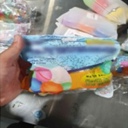
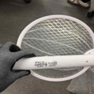
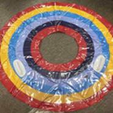
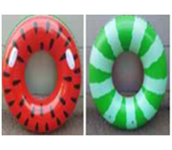
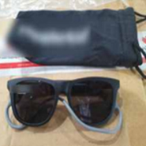
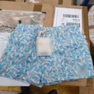

본문
안전성조사(수시2차)와 안전성 집중검사
국가기술표준원은 테마파크, 전시회·박람회 등 어린이제품 및 생활용품 등 20개 품목, 150개 제품에 대한 안전성 조사 결과를 발표하였다. 이번 안전성조사는 2월부터 8월까지 약 6개월간 진행했고, 조사대상은 생활용품 12개 품목, 어린이제품 8개품목으로 총 20개 품목 150개 제품을 조사하였다. 조사 결과, 유해 화학물질, 제품 내구성 등 안전기준을 위반한 생활용품과 어린이제품 총 9개 제품이 적발되었고, 국가기술표준원은 관련 사업자에게 리콜 명령을 내렸다.
관련 정보는 제품안전정보센터(www.safetykorea.kr) 및 소비자24(www.consumer.go.kr)에 공개하였고, 위해상품판매차단시스템에도 등록하였다. 국가기술표준원은 앞으로 리콜 빈도가 높은 품목, 겨울철 용품 등 2,400여개 제품을 대상으로 이번 하반기에 3차례에 걸쳐 조사계획을 세웠다.
| 순번 | 품목명 | 업체명 | 모델명(제조/수입구분) | 부적합 내용 |
| 인증번호 | ||||
| 1 | 건전지 | 해락유한 책임회사 |
Lonlife(수입) |
|
| B052R361-6001A | ||||
| 2 | 방한용 · 패션용 · 스포츠용 마스크 | 더조은 주식회사 | (대형)알룩패션마스크(제조) |
|
| 비대상 | ||||
| 3 | 온열팩 | 주식회사 시엘 | EST-HP2(수입) |
|
| B683R5021-21001 | ||||
| 4 | 운동용 안전모 | (주)루미 | SEIRA NF-01(제조) |
|
| B533A5001-21001 |
| 순번 | 품목명 | 업체명 | 모델명(제조/수입구분) | 부적합 내용 |
| 인증번호 | ||||
| 1 | 아동용 섬유제품(가방) | 굿데이즈 | 아동용 섬유제품(수입) |
|
| 비대상 | ||||
| 2 | 아동용 섬유제품(모자) | 레코랜드코리아 유한회사 |
유니콘모자(수입) |
|
| 비대상 | ||||
| 3 | 아동용 섬유제품 (우의) |
아진통상 | 로티아동 우의(수입) |
|
| 비대상 | ||||
| 4 | 완구 | (주)씨케이 | 변신로봇 시리즈(수입) |
|
| CB067R1189-2001 | ||||
| 5 | 유모차 | 주식회사 이지아이온 | KES002 | M2(수입) |
|
| CB131R289-2001 |
한편, 국가기술표준원은 관세청 및 유관 부처와 합동으로 지난 6월 한 달간 여름 성수기 수입물품을 대상으로 안전성 집중검사를 실시하였다. 주된 제품은 물놀이 용품과 여름용 전기기기(전기 모기채, 휴대용 선풍기 등)를 대상으로 시행했다. 적발된 제품으로는 공기주입식 물놀이기구와 물놀이 완구가 약 1.7만점, 물안경 약 9천점, 충전식 전지가 사용된 전기기기(전기 모기채, 휴대용 선풍기 등) 약 7천점, 수영복 약 2천점 등 순으로 나타났다. 주요 적발사례는 다음과 같다.
| 구분 | 적발제품 사례 | 비고 | |
| ① KC인증 미필 |  완구(물풍선) |  직류전원을 사용하는 전격살충기(전기모기채) | 안전확인신고 · 공급자적합성확인 신고를 하지 않은 제품 |
| ② 허위 표시 |

검사제품 사진 (공기주입식 물놀이기구) |
 안전확인신고한 제품 | 안전확인 신고한 제품과 색상이 동일하지 않은 제품 |
| ③ 표시사항 위반 |  어린이용 선글라스 |  아동용 수영복 | 인증정보 미표시 (KC마크, 수입자명, A/S연락처 등) |
비고) KC 인증을 받지 않았거나, KC 인증을 받은 모델과 다른 모델을 수입하면서 인증을 받은 모델의 정보를 표시(허위표시), 또는 안전인증 정보(KC 마크, 수입자명 등) 표시를 누락
국민생활과 밀접한 어린이 용품, 전기․생활 용품 등의 안전 기준 미비는인명사고로 연결될 위험성이 큰 만큼, 국표원과 관세청은 앞으로도 안전성 검사를 철저히 이행해 나감으로써 국민 안전을 위협하는 수입 제품의 국내 유통을 근절해 나갈 계획이다.
자세한 내용은 국가기술표준원 홈페이지(www.kats.go.kr)에서 확인 바랍니다.